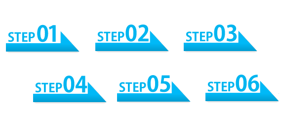

SOC2とは
ISO/IEC 27017が国際間の取引をスムーズにするためにInternational Organization for Standardization（国際標準化機構）が定めた、 クラウドサービスの提供や利用に対して適用されるクラウドセキュリティの国際的な標準規格であるの対し、 SOC(Reporting on Controls at a Service Organization)は、米国公認会計士協会（AICPA）とカナダ勅許会計士協会（CICA）が制定した Trustサービス原則（Trust Services Principles and Criteria）に準拠しているのが大きな違いとなります。
SOC2は、外部の監査機関が
- サービスのセキュリティ性
- 可用性
- 処理の整合性
- 機密性
- 個人情報保護
の5原則を基準に、合計127の領域において、監査を通じて提供するサービスの業務プロセスと統制環境が基準を満たしているかを検証し、該当基準を満たした場合にのみ取得可能な保証報告書で、サービスの利用者（想定利用者を含む）が利用できます。 なお、この中から一つ以上を選択（複数選択可能）し、評価が行われることになります。 また、更新のために毎年厳しい審査が行われることで知られ、継続することに大きな意味を持ちます。



→ここに適当に書くとどうなるかテスト
壁紙テスト